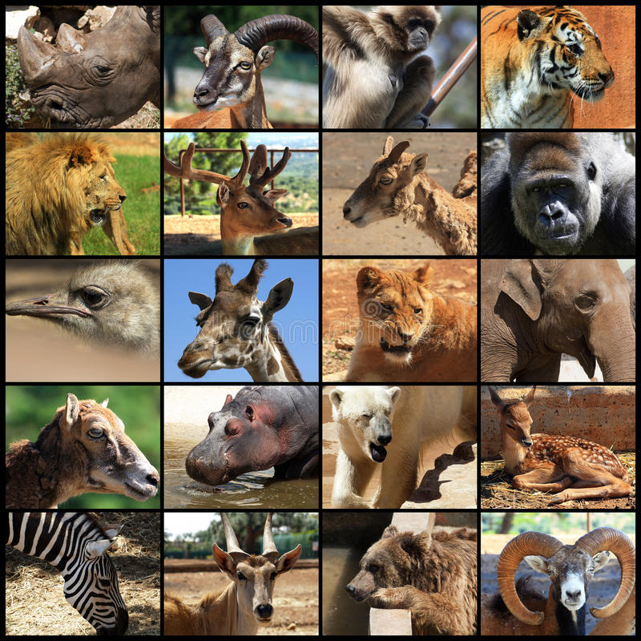

Inicio
Peces
Caballito de mar
Tiburon
Pez globo
Pez payaso
Pez espada
Mamiferos
Anfibios
Rana venenosa
Cecilia
Ajolote
Salamandra
Triton
Aves
Aguilas
Zopilote
Paloma
Guacamaya
Tucan
Reptiles
Dragon de komodo
Cobra real
Camaleon
Tortuga
Cocodrilo

INTEGRANTES
DZIB POOT ADRIANA PATRICIA
PERAZA RUELAS MIGUEL ANGEL
LOPEZ MONTERO PABLO IGNACIO
MONTERO URIBE PABLO ALEJANDRO
NOVELO DE LA CRUZ JOSE ROBERTO